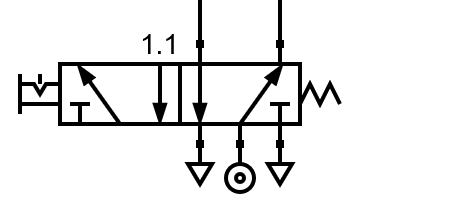

6. Válvula 5/2¶
Una válvula 5/2 tiene 5 vías de aire y 2 posiciones:
{kind=link}

Válvula 5/2 en reposo.¶

Válvula 5/2 accionada.¶
Las tres vías de la parte inferior se conectan a la fuente de presión (vía de en medio) y a los escapes a la izquierda y a la derecha. Las dos vías superiores se utilizan para llevar aire a dos lugares distintos o para retirar ese aire durante el reposo. Esta válvula está pensada para pilotar cilindros de dos vías que veremos más adelante.
En la siguiente simulación podemos ver cómo funciona esta válvula pilotando dos cilindros de simple efecto:
- Al accionar la válvula 5/2, el aire pasa directamente desde la fuente de presión hacia el cilindro neumático 1.0, por lo que el vástago sale completamente hacia afuera. Mientras tanto, el cilindro 2.0 se conecta con el escape, permitiendo que este vuelva a su posición de reposo.
- Al llevar a reposo la válvula 5/2, el aire antes introducido en el cilindro 1.0 tiene una vía de escape a través de la válvula, por lo que este cilindro retorna a su posición de reposo. Mientras tanto, al cilindro 2.0 le llega toda la presión, por lo que el vástago sale completamente hacia fuera.
Una válvula 5/2, por lo tanto, sirve para pilotar dos salidas contrarias. Una de las salidas siempre tendrá presión mientras que la contraria siempre tendrá conexión a escape y estará sin presión.
Si intentáramos hacer la misma función con dos válvulas 3/2, podríamos tener estados en las que las dos válvulas se encuentren haciendo la misma función (las dos dando presión o las dos conectadas a escape), mientras que la válvula 5/2 asegura que una de las vías superiores siempre estará haciendo la función contraria a la otra vía.
Ejercicios¶
¿Qué es una válvula neumática 5/2 y de qué partes se compone?
Explica con tus palabras cómo funciona una válvula 5/2 en cada una de sus dos posiciones.
Dibuja una válvula 5/2 de accionamiento manual en reposo. Dibuja también una válvula 5/2 de accionamiento manual accionada.
En ambos casos dibuja las entradas de presión y los escapes.
Dibuja en el siguiente simulador dos cilindros de simple efecto accionados por una válvula 5/2 manual con enclavamiento.
Comprueba que su funcionamiento es el mismo que el circuito simulado al comienzo de este tema.
¿Qué parecido y qué diferencia hay entre una válvula 5/2 y dos válvulas 3/2?